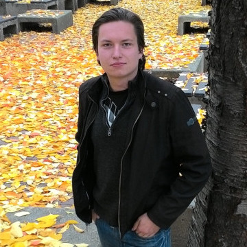
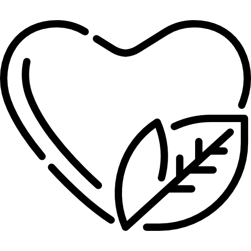

IT for Humanity
Kdo jsme
Ing. Filip Hrdlička
Filip získal bakalářský titul na ČVUT FEL v oboru Softwarové inženýrství a technologie a magisterský titul na VŠCHT v oboru Projektové řízení inovací. Touto kombinací získal technické znalosti a schopnosti dovést inovační projekty ke komercionalizaci. Mezi jeho oblasti zájmu patří programování, umělá inteligence a strojové učení.
Praktické zkušenosti získal jako výzkumný pracovník a programátor na ČVUT - CIIRC (Český institut informatiky, robotiky a kybernetiky). V současné době pracuje jako SW senior vývojář ve společnosti DNAI s.r.o. a je doktorandem oboru Asistivní technologie na ČVUT FBMI.
Ve společnosti je zodpovědný za vývoj SW.
Volný čas nejraději tráví ve společnosti Francouzského buldočka Ritche.
Jak vám pomůžeme
Společnost IT for Humanity s.r.o. je technologický start-up v oboru asistivních technologií s jasně definovaným podnikatelským plánem.
Naše vize a cíle:
Za pomoci nejnovějších vědeckých poznatků a technologií dovedeme
-

zajistit bezpečí seniora v domácnosti
-

zvýšit kvalitu života seniora
-

ulevit pečovatelům a blízké rodině